Data Collection Methods: Using Network Canvas for Sociocentric (Whole Network) Data Collection
EPH 647 CBPR and Social Network Analysis
2026-03-03
Objectives
Understand the difference between ego-centric (personal network) and sociocentric (whole network) designs.
Understand sociocentric data structures and how they differ from personal network data.
Learn how to design sociocentric data collection protocols in Network Canvas.
Recognize challenges and burden reduction strategies in whole network studies.
Before we get started
Social network data is inherently complex and nested, and sociocentric (whole network) designs amplify this complexity by attempting to account for an entire network within a clear boundary (e.g., a school, clinic, organization, or a friendship networks).
Social Network Analysis (SNA) typically comes in two flavors: ego-centric (personal networks) or sociocentric (whole networks). Today we will focus on the latter.
Similar to with personal networks, it is important to understand the different data types needed to be collected, but now at the level of a bounded population rather than a single ego.
The data types needed to analyze sociocentric data are similar to those in personal networks with the added caveat that they must be collected for all (or at least almost all) network members and their ties.
The different data components for sociocentric (also called whole) network data are:
- Node (actors/egos) data – questions about each actor/ego in the bounded network.
- Edge (tie) data – questions about the relationships between any pair of nodes.
- Dyadic data – questions about the relationship between specific ordered pairs of actors (directed ties).
- Tie Strength Data – strength or nature of relationships (e.g., frequency of contact, emotional closeness, collaboration intensity).
- Multiplex Data – multiple types of relationships between the same pair of actors (e.g., friend, co-worker, sex partner).
- Two-mode data – the ties between actors and organizations, events, or settings (e.g., membership, attendance, use of services).
From Personal Networks to Whole Networks 🔄
Ego-centric vs Sociocentric Designs
- Ego-centric (personal) networks:
- Focus on one focal respondent (ego) and their nominated alters.
- Alters are unique to each ego; alter–alter ties are limited to alters named by the same ego.
- Networks from different egos typically do not overlap analytically… even if they might in real life.
- Sociocentric (whole) networks:
- Focus on a bounded population (e.g., all students in a class, all staff in a clinic, all organizations in a coalition).
- Aim to observe all (or most) nodes and ties within that boundary.
- Overlap is expected, and the whole network is analyzed as a single structure.
When to use which?
- Ego-centric data collection is appropriate when:
- You are primarily interested in individual outcomes and their immediate personal networks (support, risk, behaviors).
- Population boundaries are fuzzy or too large to account for.
- You have limited resources and cannot feasibly survey everyone.
- You may be sampling a sensitive population, and anonymity is a concern.
- Use sociocentric designs when:
- You are interested in global network structure (density, centralization, communities, components).
- You want to identify key players, isolates, bridging , or subgroups within a defined setting.
- Your intervention or research question targets the entire setting or system (e.g., a school, clinic, coalition).
Tip
Your research question here matters. Having a clear and solidified research question and methodological approach in mind helps clarify the appropriateness of the design and the data collection strategy.
Data Structures in Sociocentric Networks
Characteristics of each actor in the bounded network (e.g., age, role, department, years in organization).
Can be collected in different software like REDCap (more on that later)
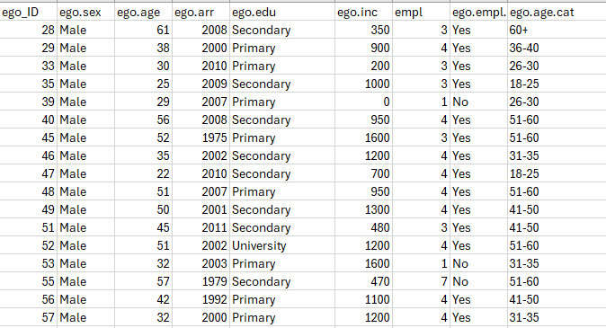
Presence/absence of a tie between any pair of actors.
Tie attributes such as strength, frequency, direction, and type (e.g., closeness, frequency of PrEP conversation, likelihood to distribute an HIVST).
Distinguishable in the sense that this usually comes as a from to format.
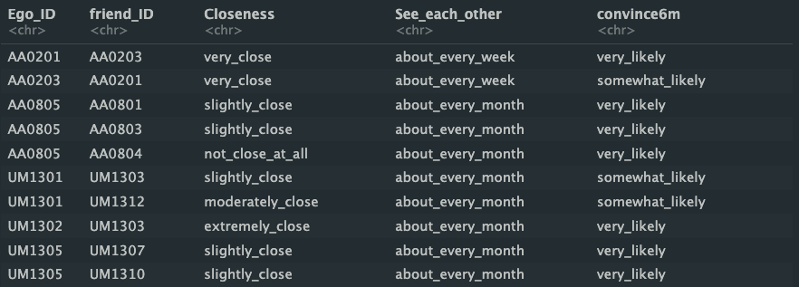
- Links between actors and higher-level structures (e.g., organizations, services, events, neighborhoods, or venues).
- Useful for understanding how structural contexts shape relationships and information flow.
- This type of data can also be collected in REDCap. However, in a social network design you’re usually interested in collecting data on the ties between actors, which is tranditionally not supported in a REDCap project.
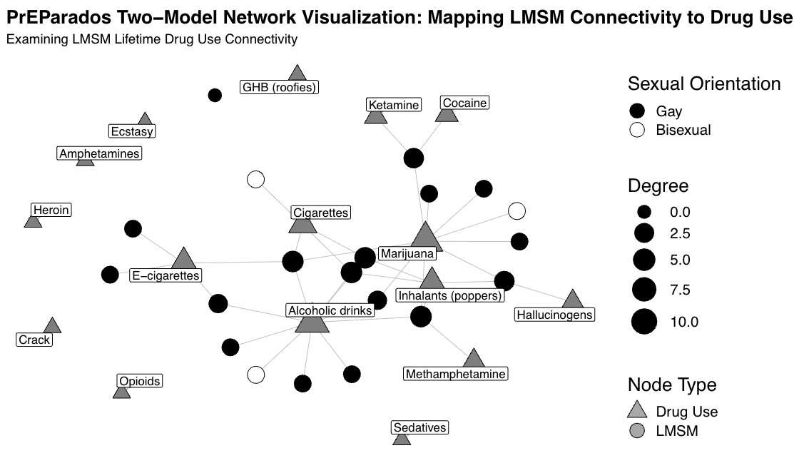
Personal vs Whole Network analysis
- A whole network can be visualized as a single network with all actors and their ties.
- Sociocentric designs treat the entire network as the unit of analysis.
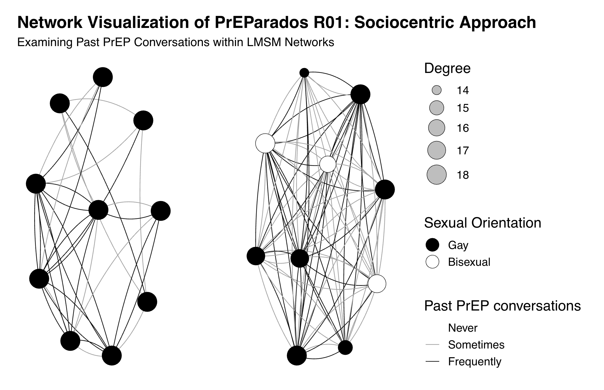
- Ego-centric data can be visualized as the actor (ego) their direct ties (alters) and ties among those alters (alter–alter).
- Ego-centric designs treat the ego and their local neighborhood as the unit of analysis.
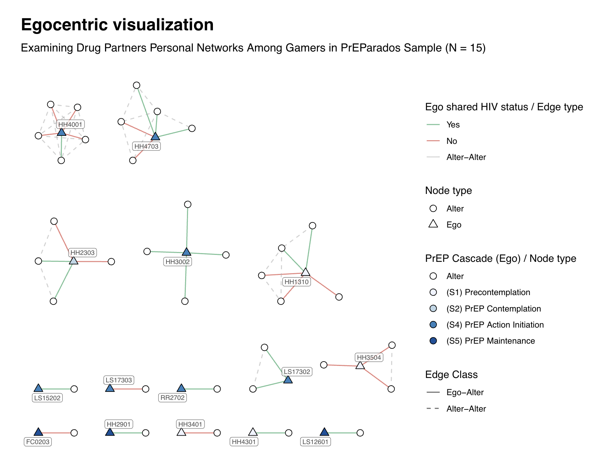
Sociocentric Data Collection Fundamentals 🧩
Design Features of Whole (Sociocentric) Network Studies
- Bounded Population
- Clearly define who is “in” the network (e.g., all 10th graders in a school, all staff in Department of Public Health Sciences, all recruited friends within a closed network).
- This boundary definition is crucial and distinguishes sociocentric from ego-centric designs.
- Sampling and Participation
- aim for a high or all participation rates, since missing nodes or ties can bias whole-network measures.
- This network design requires pre planning of recruitment strategies that fit the setting in which your sampling from (e.g., in-class surveys, staff meetings, online sessions).
- Tie Definition
- Clearly define what is a “tie” (e.g., “talk to about health”, “work together weekly”, “feel close to”, “likelihood to distribute an HIVST Kit”).
- Ties can be also be directed (A → B) or undirected (A–B).
Why am I talking about this? 🤨
Importance of fundamentals
Tip
it’s important to discuss these fundametal concepts because ultimately a sociocentric design is not just a different way to collect data, but a fundamentally different approach to understanding social networks and analysis. The design choices you make in how you define the network boundary, ties, and manage data collection have implications for the types of analyses you can conduct and the insights you can gather about those network dynamics.
Network Canvas for Sociocentric Studies 💻
What is Network Canvas?
- Network Canvas is a data collection software specifically tailored to handle social network data, including:
- Node attributes (actors).
- Edge attributes (ties).
- Layout and two-mode data.
- For sociocentric designs, NC can:
- Import and manage rosters of nodes.
- can also support normal name generator.
- Collect tie data across the entire bounded network.
- Support multiple edge types (e.g., advice, friendship, collaboration).
- Import and manage rosters of nodes.
What is Network Canvas? (cont)
It is free and open source.
It is intuitive and user friendly.
Their development community is open to feedback and suggestions.
- you also can communicate with their development team through their community forums.
It works well with major data wrangling software, like Python and R.
Major Components of Network Canvas
Network Canvas has three main programs:
- Architect: for building protocols and surveys.
- Interviewer: for deploying and running interviews.
- Fresco: for managing multi-site or multi-wave projects and centralizing data
Major Components of Network Canvas
- Used to build whole network protocols:
- Import or define a roster of actors.
- Specify node variables (e.g., role, department).
- Define edge types and tie-related questions.

- Used to deploy and run sociocentric network interviews:
- Present rosters to respondents.
- Capture ties and their attributes (direction, strength, type).
- Optionally use layout stages to build sociograms.

- Used to be called “server” now called Fresco, which is NC data collection on a web browser!
- Can be used to manage multi-site or multi-wave sociocentric projects:
- Keep protocols synchronized across teams and locations.
- Centralize data from many respondents.
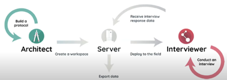
Components of a Sociocentric Network Canvas Protocol
- Define the bounded population:
- Pre-load a node list representing all actors in the network.
- Include key node attributes (e.g., role, unit, site) as variables.
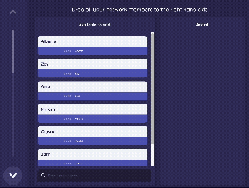
- Use roster-based questions to capture ties:
- Example: “From this list, who do you regularly talk to about [topic]?”
- Allow respondents to select multiple actors from the roster.
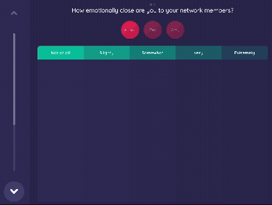
How do you collect node data in the network?
there are different ways in which one can generate nodes in the network, in SNA, we typically call these “nodes” and these “nodes” can be generated using a “name generator”
- For personal networks
- you usually ask the ego to name their alters (e.g., “In the past 6 months, provide the initials of different people, including men and women, with whom you had vaginal or anal sex, even if only one time”
- For Sociocentric networks
- you can take a “roaster-based” approach. Which lists all actors in a bounded population (e..g, friendship network 01), and then ask respondents to indicate which of those actors they have a particular relationship with (e.g., “From this list, who do you regularly talk to about health?”).
- This approach is usually used to avoid recall error.
Note
in a sociocentric design it’s important to ask yourself if everyone complete the survey? if not, how do we handle missing data?
Variable and Edge Types in Sociocentric Protocols
- Variable Types (similar to personal networks):
- Text, Number, Ordinal, Categorical, Boolean, Layout, DateTime, Scalar.
- We use node variables (e.g., PrEP status, is a smoker) for actor attributes and edge variables for tie attributes (e.g., frequency of contact, emotional closeness).
- Edge Types:
- Directed ties (e.g., “Who do you go to for advice?”).
- Undirected ties (e.g., “Who are your close friends?”).
- Binary vs ordinal values ties (presence/absence vs strength/frequency)
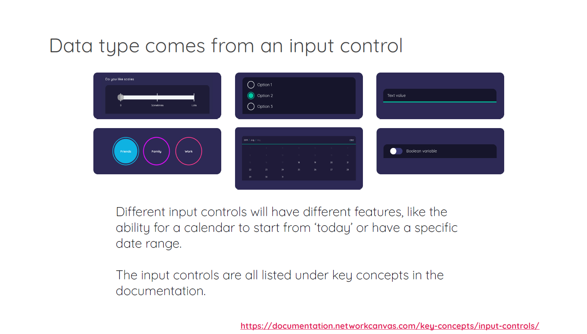
Recommended Sociocentric Protocol Building Process 🏗
Steps to Build a Whole Network Protocol in Architect
- 1. Define the boundary and roster:
- Decide who belongs in the network and create a roster.
- Import actor IDs and attributes as node variables.
- 2. Specify tie definitions and edge types:
- Decide what “counts” as a tie and whether it is directed/undirected, binary/valued.
- Create edge variables and edge types that reflect your research questions.
- 3. Design stages:
- Roster / node stages to display actors.
- Edge elicitation stages (roster-based, sociograms, or dyad-census style).
- 4. Choose input controls:
- Use controls that make repetitive tasks easier (e.g., checkboxes, multi-select lists, drag-and-drop).
- Consider participants’ comfort level with technology and group size.
Burden Reduction in Whole Network Projects
Whole network surveys can be burdensome, especially when networks are large.
Methods to reduce inherent social network burden:
- Limit the number of tie types asked per interview.
- Use filters to ask detailed questions only for selected ties (e.g., “closest” or “most important”).
- Implement skip logic to bypass irrelevant questions and stages.
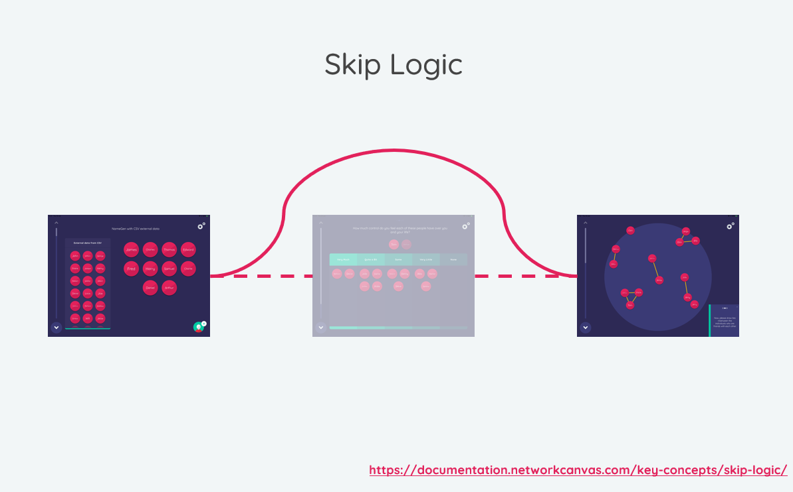
General Sociocentric Protocol Workflow 🔄
- At a high level, running a sociocentric protocol might involve:
- Introducing the study and clarifying the network boundary.
- Confirming or updating roster information (e.g., verifying who is present).
- Asking about ties using roster-based or sociogram stages.
- Collecting additional information on a subset of ties or actors.
- Saving and securely managing network data for later analysis in R or Python.

Analytic Implications 📊
What sociocentric data allows us to collect
- Whole-network measures:
- Density, average path length, clustering.
- Node-level measures:
- Degree, in-degree, out-degree, betweenness, centrality.
- Sub-structures:
- Components, communities, cliques, cores, and bridges between communities.
- These measures rely on having information about all (or nearly all) actors and their ties, which is why careful sociocentric data collection is critical.
Micro–Macro Link and Two-Mode Designs
- Sociocentric data support analyses that connect:
- Micro-level relationships (who is connected to whom).
- Macro-level structures (clusters, centralization, organizational context).
- Two-mode sociocentric designs:
- Actors linked to events, organizations, or settings.
- This helps us explain how affiliation patterns and structures shape behaviors and outcomes (e.g., how being frequenting a social venue influences HIV risk).
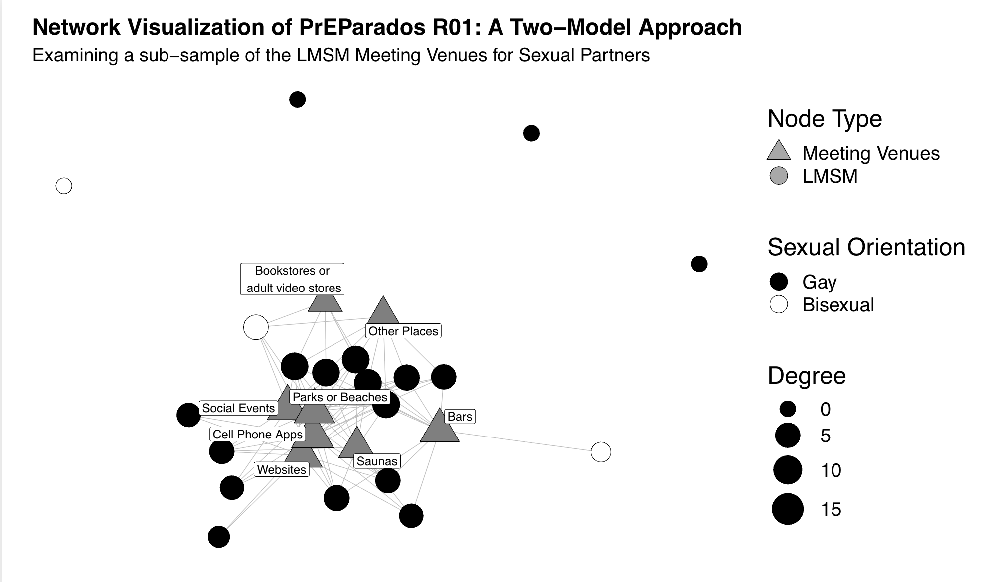
Overview
Today you learned:
Sociocentric (whole network) designs focus on bounded populations, aiming to capture all actors and their ties.
Compared to ego-centric designs, sociocentric studies:
- Require clearer boundary definitions and higher participation.
- Enable analyses of global network structure and positions.
How Network Canvas supports sociocentric data collection through:
- Roster-based stages,
- Flexible edge and variable types,
- Visual sociogram and layout tools.
Thoughtful protocol design and burden reduction strategies are essential for collecting high-quality whole network data.